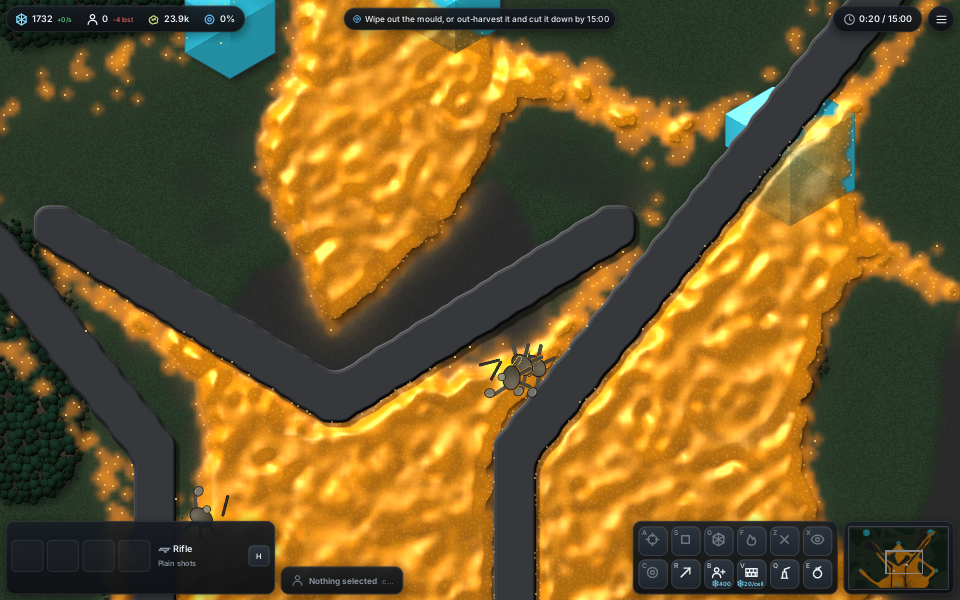
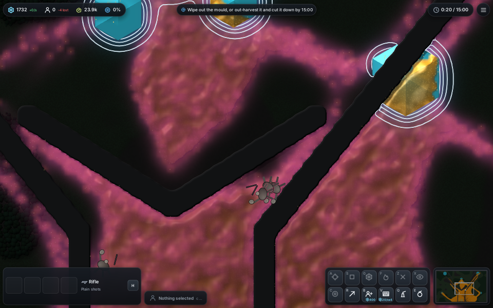
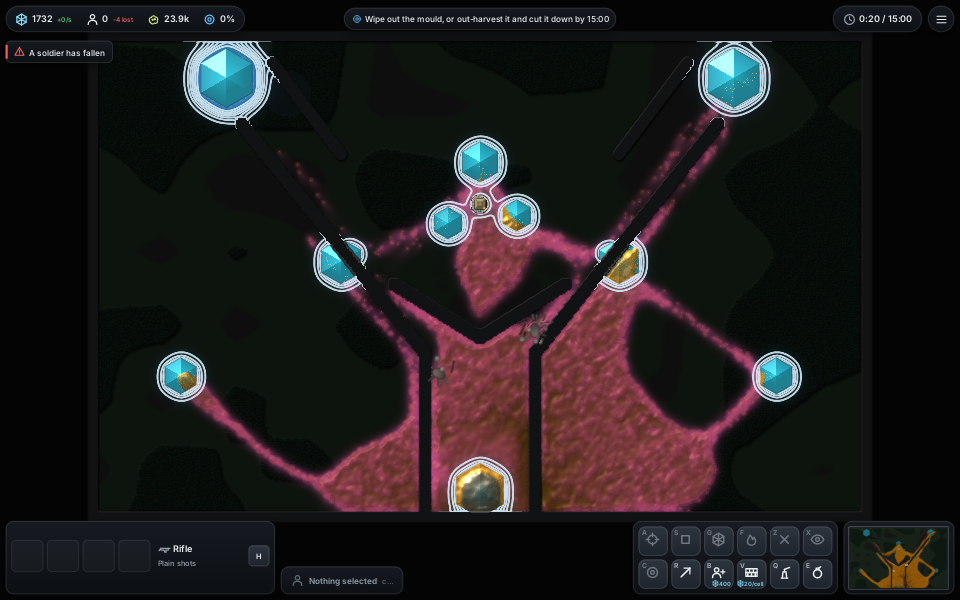

<title>Scent View</title>
<meta name="claude:viewport-fit-sides" content="cover">
<link rel="stylesheet" href="https://fonts.googleapis.com/css2?family=Space+Grotesk:wght@500;700&family=Inter:wght@400;600&display=swap">
<style>
/* Layout: one column of clips, each with what it shows beside it; dark-first like the game. */
:root {
  --bg: #0d1116; --panel: #151b22; --fg: #e6ecf2; --muted: #93a1b0;
  --scent: #46aaff; --trail: #ff5abe; --line: #263040;
  --display: "Space Grotesk", system-ui, sans-serif; --body: "Inter", system-ui, sans-serif;
  color-scheme: dark;
}
@media (prefers-color-scheme: light) { :root:not([data-theme="dark"]) { --bg: #f3f6f9; --panel: #ffffff; --fg: #141a21; --muted: #556270; --scent: #1c7ad6; --trail: #c42c8a; --line: #d6dee7; color-scheme: light } }
:root[data-theme="light"] { --bg: #f3f6f9; --panel: #ffffff; --fg: #141a21; --muted: #556270; --scent: #1c7ad6; --trail: #c42c8a; --line: #d6dee7; color-scheme: light }
body { background: var(--bg); color: var(--fg); font-family: var(--body); line-height: 1.55; }
main { max-width: 1000px; margin: 0 auto; padding-block: 28px 48px; padding-left: max(16px, env(safe-area-inset-left, 0px)); padding-right: max(16px, env(safe-area-inset-right, 0px)); display: grid; gap: 28px; }
h1, h2 { font-family: var(--display); text-wrap: balance; margin: 0; }
h1 { font-size: 2rem; }
h2 { font-size: 1.2rem; }
p { margin: 0; max-width: 68ch; }
.lede { display: grid; gap: 10px; }
.key { display: inline-block; font-family: var(--display); font-weight: 700; border: 1px solid var(--line); background: var(--panel); border-radius: 6px; padding: 0 8px; }
.s { color: var(--scent); font-weight: 600; } .t { color: var(--trail); font-weight: 600; }
figure { margin: 0; display: grid; gap: 8px; }
video, img { width: 100%; max-width: 100%; border-radius: 8px; border: 1px solid var(--line); display: block; }
figcaption { color: var(--muted); font-size: 0.92rem; max-width: 80ch; }
.pair { display: grid; grid-template-columns: 1fr 1fr; gap: 14px; }
@media (max-width: 700px) { .pair { grid-template-columns: 1fr; } }
ul { margin: 0; padding-left: 1.2em; display: grid; gap: 6px; max-width: 70ch; }
</style>
<main>
  <section class="lede">
    <h1>Scent View</h1>
    <p>Press <span class="key">F2</span> in Larder World to see what the slime smells. The world dims, the <span class="s">food scent</span> turns blue with a white contour line every eighth of the way to full, and the <span class="t">trail</span> turns pink. Press <span class="key">F2</span> again to go back. These are the same two fields each walker adds up when it picks a direction, read from the engine each frame. Nothing here is drawn on top.</p>
    <p>Double-click play.cmd once this is merged and the key works in every mode. It is also on the key card (F1).</p>
  </section>

  <figure>
    <video src="scent-on.mp4" autoplay muted loop playsinline controls></video>
    <figcaption>Scent view on. Fork map, seed 1, the "rush" test squad, game seconds 2 to 31, one frame a game second, zoom 5, camera held still. The rings round each crystal are its scent. The soldiers carry a small scent of their own, which is why the slime closes on them. The pink is trail, including thin trail where few walkers stand.</figcaption>
  </figure>

  <figure>
    <video src="scent-off.mp4" autoplay muted loop playsinline controls></video>
    <figcaption>The same run with the view off, for comparison.</figcaption>
  </figure>

  <div class="pair">
    <figure>
      
      <figcaption>20 s, off.</figcaption>
    </figure>
    <figure>
      
      <figcaption>20 s, on.</figcaption>
    </figure>
  </div>

  <figure>
    
    <figcaption>The whole map at 20 s. The food scent stays close to each crystal. Over most of the map, the trail is what the slime follows.</figcaption>
  </figure>

  <section class="lede">
    <h2>Notes</h2>
    <ul>
      <li>The contour lines are one to three screen pixels wide at every zoom, so they stay sharp close up. A GPU test checks this at zoom 6 and 24.</li>
      <li>Crystals keep their normal look, and rock and walls only dim, so you can still read the map.</li>
      <li>Cost: when it's off, the view checks one flag a pixel. On the software renderer here, on and off took the same frame time within noise (GPU tail p50 92.2 and 87.8 ms with it on, 91.0 and 88.8 ms with it off). It hasn't been timed on the 1070 yet.</li>
      <li>For films: <code>larder-world look=DIR scent=1</code> starts with the view on.</li>
    </ul>
  </section>
</main>
